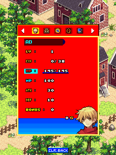

We tried discarding dragon.cfg as old progress. It actually contained three unnamed starting-character records, including the base statistics the original game needed to create a character.DS01DS04
Not disposable progress.
That experiment gave us zero character attributes and a native divide-by-zero in character details. We put the exact original configuration back into the seed. Inventing reasonable-looking stats would only have hidden the input we’d wrongly removed.DS01DS04
Actual app-private saves took priority over that starting seed. Historical test saves were not installed as fresh progress. Creating a new character and reloading the game’s own save then preserved nonzero attributes.DS01DS03

The original reloaded character details: EXP 0/38, HP 145/145, MP 100, AT 30 and DEF 10. Historical desktop output using the required original CFG and a game-generated save.
Open the image for the full original view.
DS90Name, save, reopen.
The original keypad owned name entry. The loader, heap, phone-name and media services also had to follow this BREW module’s contracts while drawing on the earlier bridge family.DS02DS06DS08
The supplied 0.1.0 physical report remained live, separately from the host character tests. The later 0.1.1 package changed the icon while preserving that execution baseline.DS05DS07
About these records
This is the supplied Dragon Sword BREW game, not another similarly named platform edition. The CFG is necessary original baseline data, distinct from later user progress. The character-details image is historical desktop output. The physical report, host save checks and later icon-only change retain their individual scopes; battles and endgame are not invented.
The receipts
Selected source lines, investigation notes and recorded feedback. Open a receipt for the original context and scope.
DS01 / The original CFG contains starting characters, not just progressCheckpoint investigation notes
Source: DragonSword_Bridge_v0.1.1_PRIVATE_CHECKPOINT.zip / DragonSword_Bridge_v0.1.1_PRIVATE/AGENTS.md · selected lines 5–14
Execute the original Dragon Sword BREW ARM module. Preserve dragon.mod, dragon.bar, dragon2.bar, DragonSword.mif and dragon.cfg exactly. No recreated gameplay, patched statistics, fabricated progression or substituted content. IMPORTANT: supplied dragon.cfg contains THREE UNNAMED STARTING CHARACTER RECORDS with their required base statistics. It is necessary original input. An absent CFG produces zero character attributes and a native divide-by-zero in character details. Do not discard the original CFG or synthesize stats. Use the original asset as a starting seed; actual app-private dragon.cfg always overrides it. Host test saves under evidence never seed an install.
DS04 / The discarded CFG experiment produced zero statsCheckpoint investigation notes
Source: DragonSword_Bridge_v0.1.1_PRIVATE_CHECKPOINT.zip / DragonSword_Bridge_v0.1.1_PRIVATE/VERIFICATION.txt · selected lines 26–29
LIMITS Host original-engine and Robolectric evidence is not a physical-device test. Touch comfort, audible Android music/effect decoding, long play and real Omni production import/public-export carry-forward remain unverified. Battles/endgame have not been acceptance-tested. No substitute gameplay, patched statistics or fabricated execution was used. The initial discarded-CFG experiment produced zero character stats. The final APK includes the exact supplied original CFG as necessary baseline data. Actual user saves override it; host test saves never seed an installation.
DS03 / Original character creation, save reload and nonzero attributesCheckpoint investigation notes
Source: DragonSword_Bridge_v0.1.1_PRIVATE_CHECKPOINT.zip / DragonSword_Bridge_v0.1.1_PRIVATE/VERIFICATION.txt · selected lines 12–21
PASS — unchanged original BREW ARM/Thumb module, BARs, MIF and required CFG fingerprints. PASS — native module factory and original applet event execution. PASS — original main menu/help and exact game-derived control mappings. PASS — fresh unnamed original CFG templates: name entry, original name validation and game-owned save. PASS — original opening dialogue, native movement and map transition into a building. PASS — reload of native 1471-byte save into the selected character. PASS — character-details screen after resume: EXP 0/38, HP 145/145, MP 100, AT 30 and DEF 10 drawn by original code. PASS — suspend/resume and stop events in original host execution. PASS — original MIDI requests dispatched with exact unwrapped score bytes. PASS — original CMID QCELP WAVE: 12 exact packets, 1920 decoded samples at 8000Hz; Java container matches independent Python and FFmpeg decodes it.
DS90 / Historical image / Dragon SwordHistorical host capture
Source: DragonSword_Bridge_v0.1.1_PRIVATE/evidence/original-execution/reloaded-character-details.png
Retained historical host output. Original emulator chrome, where present, is part of the unchanged source image. No phone capture or phone performance is inferred.
Unchanged historical image. Source member: DragonSword_Bridge_v0.1.1_PRIVATE/evidence/original-execution/reloaded-character-details.png SHA-256: 2fd2088b0a2352f783d5e22c70244b5e370a37c5c07321f1a656270b3ce0cdde The original reloaded character details: EXP 0/38, HP 145/145, MP 100, AT 30 and DEF 10. Historical desktop output using the required original CFG and a game-generated save. Scope: Unchanged historical desktop original-runtime framebuffer. Visually inspected: game-only pixels, no personal interface and no EXIF. Not a physical-phone screenshot.
DS02 / Heap, phone naming and media contractsCheckpoint investigation notes
Source: DragonSword_Bridge_v0.1.1_PRIVATE_CHECKPOINT.zip / DragonSword_Bridge_v0.1.1_PRIVATE/AGENTS.md · selected lines 21–41
Help pages in evidence/controls are the input authority. Numeric 2/4/6/8 are original direction aliases; 1/3/7/9 are separate original diagonal keys. Do not replace these with simultaneous cardinals or an analog stick. The original diagonal digits retain their alternate battle meanings. CLR/0 and Select/5 remain original actions; Android Back exits the Activity. The IHeap +0x18 service returns Boolean reserve status, NOT a malloc pointer; +0x1c reports heap usage. DeviceInfo +24 supplies total RAM. Posted startup events must drain at event boundaries. Preserve bitmap cache coherence. Native phone text input uses the actual ITextCtl boundary, including naming, multi-tap digits and original name validation. +0x08 handles events, +0x0c redraws, +0x10 sets active, +0x14 reads active, +0x38 returns live UTF-16 text. String service +0xd8 is strstr, not strcmp; +0x118 lowercases the name before the original banned-substring validation. +0xa0/+0xe4 convert text encodings. Shell +0xac performs media sniffing (initial ENEEDMORE/byte-count query, then original-byte MIME detection); +0x80 resolves the matching media class. Original MIDI bytes stay exact. CmidAudio only unwraps the single original QCELP WAVE into QCP without changing packets. Actual Android decoder support and audible output remain device acceptance requirements.
DS06 / The original keypad owns name entryCheckpoint investigation notes
Source: DragonSword_Bridge_v0.1.1_PRIVATE_CHECKPOINT.zip / DragonSword_Bridge_v0.1.1_PRIVATE/README_FIRST.txt · selected lines 13–21
Naming: switch to ORIGINAL KEYPAD; repeated digits cycle phone-style letters. Use ATTACK / TALK / OK to confirm the name and CLR to delete a character. The original game validates names and owns its own save and progression. Control help is in the three-dot utilities menu and the original game's Help. Verified on the host: original startup, main menu, help, creating a character, opening dialogue, four-way/dedicated diagonal movement, map transitions, character details with correct nonzero stats, save/reload, suspend/resume/stop, MIDI dispatch and original QCELP packet/container validation.
DS08 / The earlier BREW family supplies the foundationCheckpoint investigation notes
Source: DragonSword_Bridge_v0.1.1_PRIVATE_CHECKPOINT.zip / DragonSword_Bridge_v0.1.1_PRIVATE/app/assets/THIRD_PARTY_NOTICES.txt · selected lines 1–5
Dragon Sword: original English BREW release, Minor Axis / SK Telecom and SkyZone Entertainment. Original game code, graphics and sound belong to their respective owners. The launcher icon is a new AI-generated illustration based on the original blond hero and red scarf; it is not official developer artwork. Compatibility layer: Wakka ARM/Thumb BREW runtime, based on the private Earthworm Jim / Contra 4 / Doom RPG lineage. Dragon Sword adds its original IHeap ABI, posted startup events, character-name TextCtl services and string conversion/filter services. It executes the original unchanged ARM module. Gameplay UI: Wakka Bridge Gameplay UI Kit v1.1.2.
DS05 / The supplied phone report remains livePhone runtime report
Source: DragonSword-v0.1.0-20261024-203217-996-manual.txt · selected lines 8–24
DRAGON SWORD BRIDGE v0.1.0 PRIVATE Original BREW ARM/Thumb module; UI Kit v1.1.2 Snapshot uptime ms: 498726820 Status: Original game • v0.1.0 • sound on Host failure: Save error: Original loaded/created/started/live: true/true/true/true ARM steps: 205899376 Timers executed: 872 Key presses/releases: 94/94 Viewport: 240x320 Display updates: 633 Unknown interfaces: 0 CPU failure: null Live failure: null Native audio requests: 6/10 Android audio starts/stops/errors: 4/6/0; Stopped
DS07 / The latest update changes only the iconCheckpoint investigation notes
Source: DragonSword_Bridge_v0.1.1_PRIVATE_CHECKPOINT.zip / DragonSword_Bridge_v0.1.1_PRIVATE/VERIFICATION.txt · selected lines 1–8
DRAGON SWORD BRIDGE v0.1.1 — ICON UPDATE New generated hero/scarf/sword launcher artwork. Only icon artwork, artwork provenance, resource fingerprint, release version and signatures changed in the APK. Runtime DEX, all Java source, all original assets, package/save identity and signing key are byte-identical to v0.1.0. New Android API 34 framework checks pass (3 tests), including decoding/drawing the new icon in portrait and landscape. This is host framework evidence, not a physical-phone observation. See evidence/icon-only-scope-check.json and ICON_UPDATE.json. BASELINE GAMEPLAY VERIFICATION FROM v0.1.0 FOLLOWS